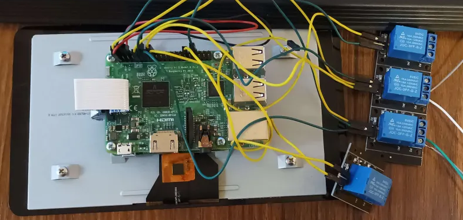
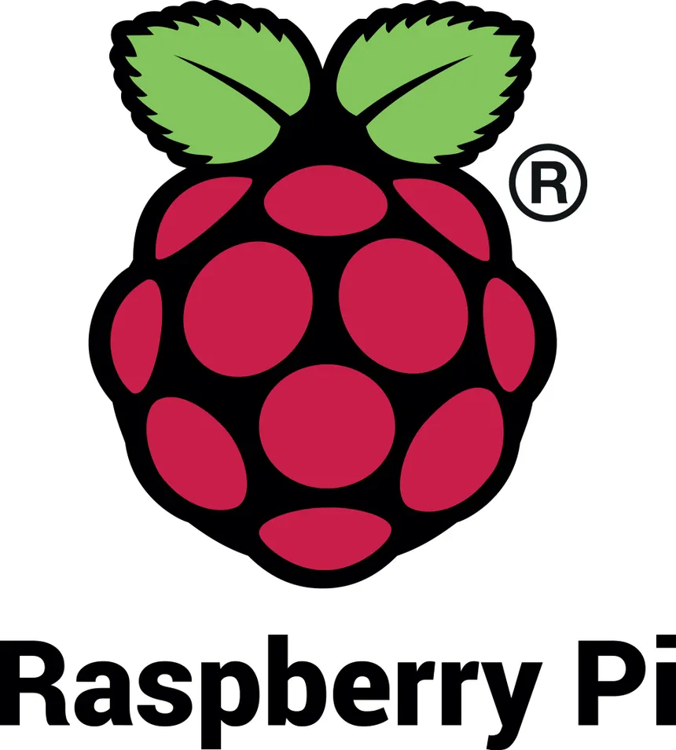
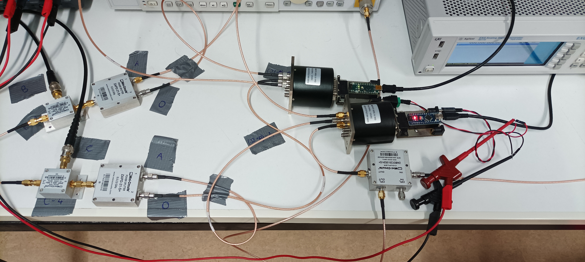
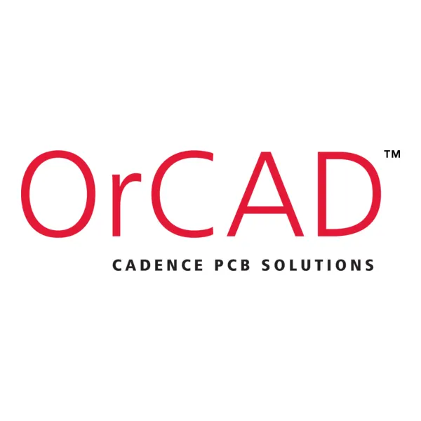

Mes stages en entreprise
Dans le cadre de ma formation en B.U.T GEII spécialité Électronique et Systèmes Embarqués, j'ai réalisé deux stages qui m'ont permis de mettre en pratique et d'approfondir les compétences acquises, tout en découvrant la réalité du monde professionnel dans des environnements très différents.
Stage chez Ranky – Diagnostic et fabrication d'un système automatisé

Contexte
Ranky est une entreprise spécialisée dans le marketing numérique qui propose l'automatisation de la collecte d'avis en ligne via des tablettes tactiles Raspberry Pi. Mon tuteur professionnel fabriquait également de la bière artisanale, ce qui a donné naissance à une seconde mission.
Missions réalisées
Deux grandes missions : le diagnostic et la réparation d'un parc de 30 à 35 tablettes Raspberry Pi, puis la conception et la fabrication complète d'une laveuse de fût automatique pilotée par Raspberry Pi.
Détail des missions
Diagnostic & réparation d'un parc de tablettes
Tri et diagnostic de 30 à 35 tablettes Raspberry Pi selon deux critères : présence de faux contacts sur les ports USB d'alimentation et dysfonctionnements logiciels (bugs tactiles, problèmes de connexion réseau).
Réparation logicielle par clonage d'une carte SD fonctionnelle pour reflasher les OS corrompus. Identification des tablettes nécessitant un remplacement de composants SMD (port USB dessoudé).
Conception d'une laveuse de fût automatique
Analyse fonctionnelle du cycle de lavage (rinçage → nettoyage → rinçage → désinfection), sélection des composants : pompes de relevage, interrupteurs relais 5 V et électrovannes 12 V commandées par Raspberry Pi.
Développement du programme en Python pour automatiser le cycle de lavage, avec lancement automatique au démarrage du système via une configuration de démarrage Linux.
Outils utilisés

Raspberry PiCompétences développées
- AC12.01 Appliquer une procédure d'essais – diagnostic systématique des 30+ tablettes selon des critères définis
- AC12.02 Identifier un dysfonctionnement – distinction faux contacts USB / bugs logiciels
- AC12.03 Décrire un dysfonctionnement – documentation des pannes relevées
- AC11.01 Produire une analyse fonctionnelle – étude du cycle de lavage, des contraintes et des composants à retenir
- AC11.02 Réaliser un prototype – fabrication du boîtier électrique et câblage de la laveuse
- AC24.01ESE Implantation logicielle – déploiement du programme Python et configuration du démarrage automatique Linux
- AC24.02ESE Évaluation de la conformité – tests du cycle de lavage complet
Stage à l'IES – Conception d'un hub USB sur-mesure pour commutateurs RF

Contexte
Au sein de l'équipe RADIAC (RADIAtion et Composants), j'ai participé au projet de recherche MAVERA (Méthodologie d'Analyse de la Vulnérabilité Électromagnétique de Robots Autonomes). L'objectif était de concevoir un hub USB sur-mesure pour automatiser les expériences avec des commutateurs RF.
Mission réalisée
Conception complète d'un hub USB 4 ports sur-mesure : bibliographie sur le protocole USB, recherche et sélection de composants, conception du schéma électrique, dimensionnement des composants, routage PCB, modélisation 3D du boîtier, commande logicielle et fabrication des cartes contrôleurs.

Détail des réalisations
Conception du schéma électrique du hub
Conception d'un hub USB 4 ports (USB5744 de Microchip) alimenté en 12 V, avec chaîne de régulation de tension (12 V → 5 V → 3,3 V et 1,2 V), commutateurs de distribution de puissance MIC2026 pour protéger les ports USB, mémoire flash SPI et oscillateur quartz 25 MHz. Dimensionnement complet de tous les composants passifs à partir des datasheets.
Routage PCB & modélisation 3D du boîtier
Routage du PCB du hub sous KiCad avec calcul des largeurs de pistes (puissance, analogique, logique). Conception du boîtier 3D (238 × 227 mm) pour accueillir le hub et les 4 commutateurs RF rackables, avec cache amovible et marges de tolérance pour l'impression 3D.
Commande logicielle du hub USB
Analyse du protocole de communication USB avec Wireshark (trames URB_CONTROL). Développement d'un script Python multi-plateforme (Windows via MPLAB API / Linux via pyusb + libusb) permettant de configurer dynamiquement les ports du hub pour automatiser les expériences MAVERA.
Fabrication des cartes contrôleurs Arduino
Réalisation des PCB des cartes contrôleurs (Arduino Nano + connecteur DB15) à l'aide de la graveuse laser 250k€ de l'IES, étamage chimique pour prévenir l'oxydation, soudure des composants et tests de fonctionnement en envoyant des commandes de commutation RF.
Outils utilisés
 Fusion 360
Fusion 360
Compétences développées
- AC31.01 Contribuer à la rédaction d'un cahier des charges – définition des contraintes du hub (4 ports, activable/désactivable, rackable, alimenté 12 V)
- AC31.02 Prouver la pertinence des choix technologiques – sélection du USB5744, justification par datasheet et tests sur kit EVB
- AC31.03 Rédiger un dossier de conception – rapport de stage complet incluant schémas, calculs de dimensionnement et documentation
- AC32.01 Évaluer la cause racine d'un dysfonctionnement – analyse des erreurs de communication USB avec Wireshark
- AC32.02 Proposer une solution corrective – développement d'un script multi-OS (Windows/Linux) en réponse aux limitations des DLL Microchip
- AC32.03 Produire une procédure de tests – protocole de validation des cartes contrôleurs par envoi de commandes de commutation RF
- AC34.01ESE Produire une procédure d'installation et de mise en service – étamage, soudure, flashage et vérification des cartes Arduino
- AC34.02ESE Exécuter la mise en service en respectant la procédure – tests systématiques des commutateurs RF avec le firmware déployé
- AC34.03ESE Produire le dossier de conformité – rapport complet de 37 pages avec table des figures, annexes et références bibliographiques
- AC23.03 Diagnostiquer un dysfonctionnement – identification et résolution des problèmes de pilotes USB sous Windows avec l'outil Zadig
- AC23.04 Identifier la cause racine – incompatibilité des DLL Microchip avec Linux, nécessitant une solution PyUSB alternative
Conception et automatisation de bancs de test pour cartes d'alimentation
🔒 Projet soumis à un Accord de Confidentialité (NDA)
En raison du caractère hautement confidentiel des équipements de défense concernés, le schéma des cartes d'alimentation, les modèles 3D exacts des bancs de test ainsi que les détails algorithmiques de l'automatisation logicielle sont soumis au secret professionnel. Aucun visuel ou schéma technique réel ne peut être exposé publiquement.
But du stage
Concevoir et réaliser des bancs de test manuels et automatiques pour des cartes d'alimentation électroniques complexes, afin de valider et sécuriser leur bon fonctionnement en sortie de production.
Missions réalisées
Saisie de schémas électriques, modélisation CAO 3D des châssis et bancs, réalisation des plans techniques fonctionnels pour usinage en atelier, et programmation de l'application logicielle d'automatisation des tests.
Détail des réalisations
Schémas électriques avec OrCAD Capture
Étude des topologies d'alimentation et sélection des points de test nécessaires aux tests. Réalisation complète des schémas électriques avec le logiciel industriel OrCAD Capture, en veillant à la clarté et à la conformité des normes schématiques.
Modèle 3D & plans mécaniques avec CAO Inventor
Conception mécanique complète de la structure physique et du berceau du banc de test sous Autodesk Inventor. Réalisation des modèles 3D volumiques et édition des plans de fabrication mécanique cotés pour en permettre l'usinage en atelier.
Automatisation logicielle du banc en langage C avec LabWindows
Développement de l'application d'automatisation de tests et d'instrumentation en langage C sous l'environnement professionnel NI LabWindows/CVI. Gestion de la communication avec les appareils de mesure et automatisation des cycles de mesure de tension et de courant.
Outils utilisés

OrCAD CaptureCompétences développées
- AC31.02 Prouver la pertinence de ses choix technologiques – sélection rigoureuse des composants d'alimentation et des points de test
- AC31.03 Rédiger un dossier de conception – production d'un dossier complet comprenant modèles CAO, plans de cotation et schémas fonctionnels
- AC32.01 Évaluer la cause racine d'un dysfonctionnement – analyse fine des écarts de tension/courant observés sur les cartes d'alimentation
- AC32.03 Produire une procédure d'essais – formalisation d'un protocole d'essais rigoureux pour garantir la conformité des cartes et des bancs de test
- AC34.02ESE Exécuter la mise en service du système – installation, interconnexion matériel/logiciel, et calibration métrologique du banc de test final